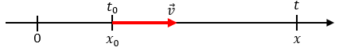

Proyecto del Curso de Física 1
Booklet Educativo

TRABAJO DEL PROYECTO FINAL
MEDICIONES
Concepto
La medición es el proceso mediante el cual se asigna un número a una propiedad física de un objeto o fenómeno, en comparación con una unidad previamente definida. Las mediciones permiten cuantificar los fenómenos naturales.
Fórmulas
Error Absoluto: $\Delta x = |x_i - x_{\text{real}}|$
Error Relativo: $E_r = \frac{\Delta x}{x_{\text{real}}} \times 100\%$
Error Porcentual: $E_p = \left|\frac{x_{\text{exp}} - x_{\text{te\u00f3rico}}}{x_{\text{te\u00f3rico}}}\right| \times 100\%$
Propagación (Suma/Resta): $\Delta (A \pm B) = \Delta A + \Delta B$
Multiplicación: $E_r(A \cdot B) = E_r(A) + E_r(B)$
Potencia: $E_r(A^n) = n \cdot E_r(A)$
Ejemplo:
Video de Ejemplo
Explicación por Adrián Pedraza en su canal de Youtube - El Traductor de Ingeniería. En el también muestra un fragmento de la explicación por parte de la Licda. María Inés Baragatti.
Ejercicio Propuesto
Se mide una mesa y se obtiene un valor de 1.98 m, siendo el valor real 2.00 m.
Solución: El valor absoluto es $|\Delta x| = |1.98 - 2.00| = 0.02$ m.
El error relativo es: $E_r = \frac{0.02}{2.00} \times 100\% = 1\%$
VECTORES
Concepto
Un vector es una cantidad física que tiene tanto magnitud como dirección. Para medir desde la posición de un carro, hasta una partícula en el espacio.
$\vec{v} = \langle v_x, v_y \rangle$

Fórmulas
Vector en forma cartesiana: $\vec{v} = \langle x, y \rangle$
Módulo: $|\vec{v}| = \sqrt{x^2 + y^2}$
Ángulo: $\theta = \tan^{-1} \left( \frac{y}{x} \right)$
Suma: $\vec{a} + \vec{b} = \langle a_x + b_x, a_y + b_y \rangle$
Producto punto: $\vec{a} \cdot \vec{b} = a_x b_x + a_y b_y$
Ángulo entre vectores: $\cos(\theta) = \frac{\vec{a} \cdot \vec{b}}{|\vec{a}||\vec{b}|}$
Ejemplo:
Un vector con su dirección y resultante, ambos representados en una gráfica.

Video de Ejemplo
Explicación por Explicación tomada de khanacademy.org, dando una introducción a los vectores y a escalares.
Ejercicio Propuesto
Dado los vectores \( A = (3, -2) \) y \( B = (-1, 4) \), calcula:
- La suma de los vectores \( A + B \)
- El producto escalar \( A \cdot B \)
- La magnitud del vector \( A \), es decir \( |A| \)
Solución:\(A + B = (3 + (-1), -2 + 4) = (2, 2).\) \(A · B = (3)(-1) + (-2)(4) = -3 - 8 = -11.\) \(|A| = √(3² + (-2)²) = √(9 + 4) = √13.\)
SUMA DE VECTORES POR MÉTODO GRÁFICO
Concepto
Este método consiste en trasladar vectores de manera que el final de uno coincida con el inicio del siguiente, obteniendo la resultante desde el origen del primero hasta el final del último.
Fórmulas
No hay una fórmula específica utilizamos una regla, un transportador y dependiendo del método, si es por paralelogramo, como su nombre lo indica dibujamos una figura paralela al ángulo, formando un trapezoide, si es por polígono trazaremos una línea seguida del último vértice.
Por ejemplo, este paralelogramo:
Ejemplo
Representación de la suma de un vector obteniendo su resultante por el método del polígono.

Video de Ejemplo
En el siguiente fragmento tenemos un análisis detallado por parte de khanacademy.org sobre método gráfico.
Ejercicio Propuesto
Suma Vectorial Gráfica: \(6 cm. \) al norte y \(8 cm. \) al este
Solución: la magnitud es \(10 cm. \). mientras que la dirección: \(36.87° \) al norte del este (o 53.13° al este del norte, según la referencia).
SUMA DE VECTORES POR MÉTODO ANALÍTICO
Concepto
Se descomponen los vectores en componentes cartesianas y luego se suman algebráicamente.
Fórmulas
Descomposición rectangular: $v_x = |\vec{v}| \cos\theta$ \\ $v_y = |\vec{v}| \sin\theta$
Suma vectorial: $\vec{R} = \vec{A} + \vec{B} = (A_x + B_x)\hat{i} + (A_y + B_y)\hat{j}$
Módulo del resultante: $|\vec{R}| = \sqrt{R_x^2 + R_y^2}$
Dirección del resultante: $\theta_R = \tan^{-1}\left(\dfrac{R_y}{R_x}\right)$
Notación vectorial: $\vec{v} = v_x\hat{i} + v_y\hat{j} = \langle v_x, v_y \rangle$
Ejemplo:
Lo que podemos observar de este vector, es que está en el cuarto cuadrante y con 30° respecto a la horizontal, por lo que sus componentes serán negativos tanto para "x" como para "y".

Video de Ejemplo
Explicación didáctica del método analítico, cortesía del canal Fisica En Acción.
Ejercicio Propuesto
Dados los vectores:
\( \vec{A} = 4\, \text{N} \) Este,
\( \vec{B} = 3\, \text{N} \) Norte
Calcular:
- Vector resultante \( \vec{A} + \vec{B} \)
- Magnitud del resultante
Solución: \[ \vec{R} = (4, 3)\, \text{N} \] \[ |\vec{R}| = \sqrt{4^2 + 3^2} = 5\, \text{N} \]
MOVIMIENTO RECTILINEO UNIFORME
Concepto
Bien, cuando una partícula se mueve con velocidad constante, en relación a un determinado sistema de referencia, su movimiento es rectilíneo uniforme (MRU). En el MRU no tiene diferencia entre velocidad media e instantánea, no existe aceleración y la única magnitud que varía con el tiempo es la posición.
Fórmulas
Posición final: $x = x_0 + v \cdot t$
Velocidad: $v = \frac{\Delta x}{\Delta t} = \text{constante}$
Desplazamiento: $\Delta x = v \cdot t$
Tiempo: $t = \frac{\Delta x}{v}$
Ejemplo:
Para establecer la función de la posición en relación al tiempo de alguna partícula en MRU es necesario, inicialmente, establecer el sistema de referencia adecuado.
Vea la siguiente figura.

Video de Ejemplo
Explicación por Damián Pedraza en su canal El Traductor de Ingeniería, en su guía didáctica sobre Cinemática.
Ejercicio Propuesto
Un auto viaja a 60 km/h en MRU. Calcula:
• Distancia recorrida en 2 horas
Solución: $\Delta x = 60 \times 2 = 120\, \text{km}$
MOVIMIENTO RECTILINEO UNIFORMEMENTE VARIADO
Concepto
El movimiento de una partícula se dice que es variado cuando su velocidad escalar instantánea varía en el transcurso del tiempo. Si, en cierto intervalo de tiempo, la partícula se mueve cada vez más rápido, es decir, si el módulo de su velocidad escalar instantánea está siempre en aumento (creciente), su movimiento variado será del tipo acelerado.
Fórmulas Principales
Posición final: $x = x_0 + v_0t + \frac{1}{2}at^2$
Velocidad final: $v_f = v_0 + at$
Ecuación sin tiempo: $v_f^2 = v_0^2 + 2a\Delta x$
Aceleración: $a = \frac{v_f - v_0}{t}$
Fórmulas Adicionales
Tiempo de encuentro: $t = \frac{v_0}{a}$ (hasta detenerse)
Altura máxima (caída libre): $h_{max} = \frac{v_0^2}{2g}$
Ejemplo:
Una partícula recorre una recta, en un determinado sentido, con aceleración constante.
Video de Ejemplo
Explicación intuitiva por parte del canal Física en Acción.
Ejercicio Propuesto
Un ciclista acelera desde 5 m/s a 15 m/s en 4 s. Calcula:
• Su aceleración
Solución: $a = \frac{15-5}{4} = 2.5\, \text{m/s²}$
CAÍDA LIBRE
Concepto
La caída libre es el movimiento que describe un cuerpo cuando cae hacia la superficie terrestre únicamente por la acción del campo gravitatorio, partiendo generalmente desde el reposo.
Fórmulas
Velocidad final: $v_f = v_0 + gt$
Altura: $h = v_0t + \frac{1}{2}gt^2$
Ecuación sin tiempo: $v_f^2 = v_0^2 + 2gh$
Tiempo de caída: $t = \sqrt{\frac{2h}{g}}$ (partiendo del reposo)
Aceleración: $g = 9.8\, \text{m/s}^2$ (constante hacia abajo)
Ejemplo:
Sistema de referencia en la caída libre.

Video de Ejemplo
Introducción a la caída libre por parte de "El profe Juan" del canal Matemáticas con Juan en el curso de Cinemática.
Ejercicio Propuesto
Una piedra cae desde 45 m. Calcula su velocidad al impactar.
Solución: $v_f = \sqrt{2 \times 9.8 \times 45} \approx 29.7\, \text{m/s}$
TIRO VERTICAL
Concepto
En el lanzamiento vertical un objeto es lanzado verticalmente hacia arriba o hacia abajo desde cierta altura H despreciando cualquier tipo de rozamiento con el aire o cualquier otro obstáculo. Se trata de un movimiento rectilíneo uniformemente acelerado MRUA O MRUV.
Fórmulas Principales
Velocidad en cualquier altura: $v_f = v_0 - gt$
Altura máxima: $h_{max} = \frac{v_0^2}{2g}$
Tiempo de ascenso: $t_{ascenso} = \frac{v_0}{g}$
Posición (y) en función del tiempo: $y = v_0t - \frac{1}{2}gt^2$
Velocidad en altura "y": $v_y = \sqrt{v_0^2 - 2gy}$
Datos Clave
• En la altura máxima: $v_f = 0$
• El tiempo de subida = tiempo de bajada
• Aceleración: $g = 9.8\, m/s^2$ (hacia abajo)
Ejemplo:
Un niño lanza una piedra hacia arriba con una velocidad inicial de 15.5 m/s. Calcular la altura máxima que alcanza la piedra antes de comenzar a descender
Video de Ejemplo
Explicación didáctica por Susi Profe en su canal de youtube con ese nombre, donde nos explica el caso de un lanzamiento vertical hacia abajo.
Ejercicio Propuesto
Se lanza una pelota verticalmente hacia arriba a 20 m/s. Calcula:
- Altura máxima alcanzada
- Tiempo que tarda en volver al punto de lanzamiento
Solución: $h_{max} = \frac{20^2}{2 \times 9.8} \approx 20.4\, m$; $t_{total} = 2 \times \frac{20}{9.8} \approx 4.08\, s$
MOVIMIENTO SEMIPARABÓLICO
Concepto
El tiro horizontal es aquél movimiento que se caracteriza por describir un camino curvo que sigue un cuerpo al ser lanzando horizontalmente, es el resultado de dos movimientos independientes; un movimiento horizontal con velocidad constante y otro vertical.
Fórmulas Clave
Eje Horizontal (x)
Posición: $x = v_{0x} \cdot t$
Velocidad: $v_x = v_{0x} = \text{constante}$
Eje Vertical (y)
Posición: $y = h - \frac{1}{2}gt^2$
Velocidad: $v_y = gt$
Fórmulas Conbinadas
Ecuaciones Globales
Tiempo de vuelo: $t_v = \sqrt{\frac{2h}{g}}$
Alcance horizontal: $d = v_{0x} \cdot t_v$
Velocidad resultante: $v = \sqrt{v_x^2 + v_y^2}$
Ejemplo:
Para entender un poco mejor el movimiento, veamos la siguiente imagen.
Video de Ejemplo
Introducción al movimiento semiparabólico o tiro horizontal por el estudiante de doctorado de IA Miquel Canal en su canal de Youtube FísicaPRO.
Ejercicio
Se lanza una piedra horizontalmente a 8 m/s desde 20 m de altura.
Calcular: Alcance horizontal.
Solución:
$t_v = \sqrt{\frac{2 \times 20}{9.8}} \approx 2.02\, \text{s}$
$d = 8 \times 2.02 \approx 16.2\, \text{m}$
MOVIMIENTO DE PROYECTILES
Concepto
Un proyectil es un cuerpo que inicialmente se le impulsa una velocidad inicial por dicho efecto mantiene una trayectoria parabólica determinada causada por la aceleración de la gravedad y la resistencia del aire.
Fórmulas Clave
Descomposición Inicial
Velocidad inicial (x): $v_{0x} = v_0 \cdot \cosθ$
Velocidad inicial (y): $v_{0y} = v_0 \cdot \sinθ$
Eje Horizontal (MRU)
Posición: $x = v_{0x} \cdot t$
Velocidad: $v_x = v_{0x} = \text{constante}$
Fórmulas Clave
Eje Vertical (MRUV)
Posición: $y = v_{0y} \cdot t - \frac{1}{2}gt^2$
Velocidad: $v_y = v_{0y} - gt$
Ecuaciones Globales
Tiempo de vuelo: $t_v = \frac{2v_{0y}}{g}$
Altura máxima: $h_{max} = \frac{v_{0y}^2}{2g}$
Alcance máximo: $R = \frac{v_0^2 \sin(2θ)}{g}$
Ejemplo:
Analicemos la siguiente imagen que describe un claro ejemplo de dicho movimiento en dos dimensiones.

Video de Ejemplo
Explicación del movimiento parabólico o de proyectiles por el estudiante de doctorado de IA Miquel Canal en su canal de Youtube FísicaPRO.
Ejercicio Propuesto
Un balón es pateado con velocidad inicial de 20 m/s a 30° sobre la horizontal. Calcula:
- Altura máxima alcanzada
- Tiempo total en el aire
- Alcance horizontal
Solución: $v_{0y} = 20\sin(30°) = 10\, \text{m/s}$ 1. $h_{max} = \frac{10^2}{2 \times 9.8} \approx 5.1\, \text{m}$ 2. $t_v = \frac{2 \times 10}{9.8} \approx 2.04\, \text{s}$ 3. $R = \frac{20^2 \sin(60°)}{9.8} \approx 35.3\, \text{m}$
LEYES DE NEWTON
Concepto
Las leyes de Newton son tres principios fundamentales que explican el movimiento de los cuerpos y la interacción de las fuerzas. Son la base de la mecánica clásica y permiten analizar la mayoría de los movimientos que ocurren en la vida cotidiana.
Las Tres Leyes de Newton
- Primera Ley (Inercia): Un objeto permanecerá en reposo o en movimiento rectilíneo uniforme a menos que una fuerza externa actúe sobre él.
- Segunda Ley (Fuerza): La aceleración de un cuerpo es proporcional a la fuerza neta aplicada e inversamente proporcional a su masa.
- Tercera Ley (Acción y reacción): Si un cuerpo ejerce una fuerza sobre otro, este ejerce una fuerza igual y en sentido contrario sobre el primero.
Fórmulas Clave
Primera Ley (Inercia): Si $\vec{F}_{\text{net}} = 0 \implies \vec{v} = \text{constante}$
Segunda Ley (Fuerza): $\vec{F} = m \cdot \vec{a}$
Tercera Ley (Acción y reacción): $\vec{F}_{AB} = -\vec{F}_{BA}$
Ejemplo:
Un objeto de 2 kg se mueve sobre una superficie horizontal sin fricción y se le aplica una fuerza de 10 N. ¿Cuál es su aceleración?
Solución: $a = \frac{F}{m} = \frac{10\,\text{N}}{2\,\text{kg}} = 5\,\text{m/s}^2$
Video de Apoyo
Explicación de las leyes de Newton por parte del creativo y elocuente equipo del canal CuriosaMente, donde nos explican de forma simple las leyes de Newton.
Ejercicio Propuesto
Un objeto de 3 kg está en reposo y recibe una fuerza neta de 6 N. ¿Cuál será su aceleración?
Solución: $a = \frac{F}{m} = \frac{6}{3} = 2\,\text{m/s}^2$
PRIMERA LEY DE NEWTON (LEY DE LA INERCIA)
Concepto
La Primera Ley de Newton, o Ley de la Inercia, establece que todo cuerpo permanece en reposo o en movimiento rectilíneo uniforme a menos que una fuerza neta actúe sobre él.
Fórmula Clave
Condición de inercia: Si $\vec{F}_{\text{net}} = 0 \implies \vec{v} = \text{constante}$
Ejemplo:
Una pelota sobre una superficie lisa permanece en reposo hasta que alguien la empuja. Una vez empujada, continuará moviéndose en línea recta y a velocidad constante si no hay fricción ni otra fuerza externa.

Video de Apoyo
Explicación sucinta y breve por cortesía del canal de Youtube Es Ciencia.
Ejercicio Propuesto
Un libro sobre una mesa permanece en reposo. ¿Por qué no se mueve hasta que alguien lo empuja?
Respuesta: Porque no hay una fuerza neta actuando sobre él; permanece en reposo por inercia hasta que se le aplique una fuerza externa.
SEGUNDA LEY DE NEWTON (LEY DE LA FUERZA)
Concepto
La Segunda Ley de Newton establece que la aceleración de un objeto es proporcional a la fuerza neta que actúa sobre él e inversamente proporcional a su masa. Esta ley permite analizar el movimiento de cuerpos en situaciones como planos inclinados y con fuerzas de fricción.
Fórmulas Clave
Segunda Ley: $\vec{F}_{\text{net}} = m \cdot \vec{a}$
Plano inclinado: $F = m \cdot g \cdot \sin\theta$
Fuerza de fricción: $f_{r} = \mu \cdot N$
donde $\mu$ es el coeficiente de fricción y $N$ la normal.
Ejemplo:
Una caja de 10 kg se encuentra sobre un plano inclinado de $30^\circ$ respecto a la horizontal. Si el coeficiente de fricción es $\mu = 0.2$, calcula la fuerza neta que hace que la caja baje por el plano.
Solución:
Fuerza paralela: $F = m g \sin\theta = 10 \times 9.8 \times \sin(30^\circ) = 49\,\text{N}$
Fuerza normal: $N = m g \cos\theta = 10 \times 9.8 \times \cos(30^\circ) \approx 84.87\,\text{N}$
Fricción: $f_r = \mu N = 0.2 \times 84.87 \approx 16.97\,\text{N}$
Fuerza neta: $F_{net} = 49 - 16.97 \approx 32.03\,\text{N}$
Video de Apoyo
Explicación sucinta y breve por cortesía del canal de Youtube Es Ciencia.
Ejercicio Propuesto
Un bloque de 5 kg descansa sobre un plano inclinado de $20^\circ$. El coeficiente de fricción es $\mu = 0.1$. ¿Cuál es la fuerza de fricción que actúa sobre el bloque?
Solución: $N = 5 \times 9.8 \times \cos(20^\circ) \approx 46.07\,\text{N}$
$f_r = \mu N = 0.1 \times 46.07 \approx 4.61\,\text{N}$
TERCERA LEY DE NEWTON (ACCIÓN Y REACCIÓN)
Concepto
La Tercera Ley de Newton afirma que si un cuerpo ejerce una fuerza sobre otro, este responde ejerciendo una fuerza de igual magnitud y dirección, pero en sentido opuesto. Se resume como "a toda acción corresponde una reacción igual y contraria".
Fórmula Clave
Expresión matemática: $\vec{F}_{AB} = -\vec{F}_{BA}$
Ejemplo:
Cuando empujas una pared, tú ejerces una fuerza sobre ella y, al mismo tiempo, la pared ejerce una fuerza igual y en sentido contrario sobre ti.
Video de Apoyo
Explicación sucinta y breve por cortesía del canal de Youtube Es Ciencia.
Ejercicio Propuesto
Una persona de pie sobre un patín empuja una pared y se mueve hacia atrás. ¿Qué fuerza provoca el movimiento de la persona?
Respuesta: La reacción de la pared: la persona empuja la pared y, en respuesta, la pared ejerce una fuerza igual y contraria sobre la persona, impulsándola hacia atrás.
APLICACIONES DE LAS LEYES DE NEWTON
Concepto
Las leyes de Newton se aplican en una amplia variedad de situaciones del mundo real. Desde el movimiento de vehículos y la caída de objetos, hasta deportes, máquinas y el análisis de fuerzas en estructuras, estas leyes explican cómo y por qué los objetos se mueven o permanecen en reposo.
Ejemplos de Aplicación
- Automóviles: El motor genera una fuerza que acelera el vehículo (Segunda Ley).
- Lanzamiento de pelotas: La trayectoria y el impacto se analizan con la Segunda y Tercera Ley.
- Caída libre: Los cuerpos caen acelerados por la gravedad (Primera y Segunda Ley).
- Remar un bote: Al empujar el agua hacia atrás, el bote avanza (Tercera Ley).
- Empujar un mueble: Si no hay suficiente fuerza, el mueble no se mueve (Primera Ley).
Video de Apoyo
Información breve pero muy concluyente sobre distintos casos de aplicación de las leyes de Newton.
Ejercicio Propuesto
Cuando saltas desde una lancha hacia el muelle, ¿por qué la lancha se mueve en sentido contrario?
Respuesta: Por la Tercera Ley de Newton: la fuerza que aplicas hacia adelante genera una reacción igual y opuesta que impulsa la lancha hacia atrás.
MOVIMIENTO CIRCULAR
Concepto
El movimiento circular es aquel en el que un objeto se desplaza a lo largo de una trayectoria en forma de circunferencia. Sus características principales son la velocidad angular, el radio de la trayectoria y la aceleración centrípeta.
Fórmulas Clave
Velocidad angular: $\omega = \frac{\theta}{t}$
Velocidad tangencial: $v = r \omega$
Aceleración centrípeta: $a_c = \frac{v^2}{r} = r \omega^2$
Frecuencia: $f = \frac{1}{T}$
Ejemplo:
Una piedra atada a una cuerda de 0.5 m gira en círculo con una velocidad constante de 4 m/s. ¿Cuál es su aceleración centrípeta?
Solución: $a_c = \frac{v^2}{r} = \frac{4^2}{0.5} = \frac{16}{0.5} = 32\,\text{m/s}^2$
Video de Apoyo
Explicación amplia, clara y detallada por parte de Maria Jesús Villanueva en su canal de Youtube SusiProfe, en la que nos da este tema tan importante en cinemática.
Ejercicio Propuesto
Un auto recorre una pista circular de radio 10 m a una velocidad constante de 5 m/s. ¿Cuál es la aceleración centrípeta que experimenta el auto?
Solución: $a_c = \frac{5^2}{10} = \frac{25}{10} = 2.5\,\text{m/s}^2$
TRABAJO
Concepto
El trabajo es una magnitud física que mide la energía transferida por una fuerza que mueve un objeto a lo largo de una distancia. Solo se realiza trabajo cuando la fuerza tiene una componente en la dirección del desplazamiento.
Fórmula Clave
Trabajo de una fuerza constante: $W = F \cdot d \cdot \cos\theta$
Donde:
$W$ = trabajo realizado (Joules)
$F$ = magnitud de la fuerza (Newtons)
$d$ = distancia (metros)
$\theta$ = ángulo entre la fuerza y el desplazamiento
Ejemplo:
Una persona empuja una caja con una fuerza de 50 N a lo largo de 4 m, en línea recta y en la misma dirección de la fuerza. ¿Cuánto trabajo realiza?
Solución: $W = 50 \times 4 \times \cos(0^\circ) = 200\,\text{J}$
Video de Apoyo
Explicación extendida de un ejercicio de aplicación por parte del profesor Sergio Llanos en su canal de Youtube.
Ejercicio Propuesto
Si una fuerza de 20 N mueve un objeto 3 m en la dirección de la fuerza, ¿cuánto trabajo realiza?
Solución: $W = 20 \times 3 \times \cos(0^\circ) = 60\,\text{J}$
ENERGÍA CINÉTICA
Concepto
La energía cinética es la energía que posee un cuerpo debido a su movimiento. Depende de la masa del objeto y de la velocidad con la que se desplaza.
Fórmula Clave
Energía cinética: $E_k = \frac{1}{2}mv^2$
Donde:
$E_k$ = energía cinética (Joules)
$m$ = masa (kg)
$v$ = velocidad (m/s)
Ejemplo:
Una pelota de 2 kg se mueve a 5 m/s. ¿Cuál es su energía cinética?
Solución: $E_k = \frac{1}{2} \times 2 \times 5^2 = 1 \times 25 = 25\,\text{J}$
Video de Apoyo
Explicación amplia, clara y detallada por parte de Maria Jesús Villanueva en su canal de Youtube SusiProfe, donde nos explica acerca de la energía cinética.
Ejercicio Propuesto
¿Cuál es la energía cinética de un auto de 1,000 kg que viaja a 10 m/s?
Solución: $E_k = \frac{1}{2} \times 1000 \times 10^2 = 500 \times 100 = 50,000\,\text{J}$
ENERGÍA POTENCIAL Y CONSERVACIÓN DE LA ENERGÍA
Concepto
La energía potencial es la energía almacenada en un objeto debido a su posición o estado. La ley de conservación de la energía establece que la energía no se crea ni se destruye, solo se transforma de una forma a otra.
Fórmulas Clave
Energía potencial gravitatoria: $E_p = mgh$
Donde:
$E_p$ = energía potencial (Joules)
$m$ = masa (kg)
$g$ = gravedad ($9.8\,\text{m/s}^2$)
$h$ = altura (m)
Conservación de la energía: $E_{inicial} = E_{final}$
Ejemplo:
Una caja de 5 kg está a 10 m de altura. ¿Cuál es su energía potencial gravitatoria?
Solución: $E_p = 5 \times 9.8 \times 10 = 490\,\text{J}$
Video de Apoyo
Explicación amplia, clara y detallada por parte de Maria Jesús Villanueva en su canal de Youtube SusiProfe, donde nos explica la Energía potencial y conservación de la energía.
Ejercicio Propuesto
Un niño de 40 kg sube a un columpio que está a 2 m del suelo. ¿Cuál es su energía potencial gravitatoria respecto al suelo?
Solución: $E_p = 40 \times 9.8 \times 2 = 784\,\text{J}$
MOMENTUM LINEAL
Concepto
El momentum lineal, también conocido como cantidad de movimiento, es una magnitud vectorial que representa el producto de la masa de un cuerpo por su velocidad. Es fundamental en el análisis de choques y colisiones.
Fórmula Clave
Momentum lineal: $\vec{p} = m \cdot \vec{v}$
Donde:
$\vec{p}$ = momentum lineal (kg·m/s)
$m$ = masa (kg)
$\vec{v}$ = velocidad (m/s)
Conservación del momentum: $\sum \vec{p}_{\text{inicial}} = \sum \vec{p}_{\text{final}}$
Ejemplo:
Una pelota de 0.5 kg se mueve a 6 m/s. ¿Cuál es su momentum lineal?
Solución: $p = 0.5 \times 6 = 3\,\text{kg}\cdot\text{m/s}$
Video de Apoyo
Explicación amplia y detallada tratando de no dejar huecos de información por cortesía de FiAsMath.
Ejercicio Propuesto
Un auto de 900 kg avanza a 12 m/s. ¿Cuál es su momentum lineal?
Solución: $p = 900 \times 12 = 10,\!800\,\text{kg}\cdot\text{m/s}$
CHOQUES
Concepto
Un choque es una interacción breve entre dos cuerpos en la que se produce una gran fuerza durante un tiempo muy corto. Se analizan en física según la conservación del momentum lineal y, en algunos casos, de la energía.
Fórmulas Clave
Conservación del momentum: $\sum \vec{p}_{\text{inicial}} = \sum \vec{p}_{\text{final}}$
Choque elástico: Se conserva la energía cinética total.
Choque inelástico: No se conserva la energía cinética, pero sí el momentum lineal.
Ejemplo:
Dos carros, uno de 1,000 kg y otro de 800 kg, colisionan frontalmente. Antes del choque, el primero va a 10 m/s y el segundo a -12 m/s. ¿Cuál es el momentum total antes del choque?
Solución: $p_1 = 1,\!000 \times 10 = 10,\!000$
$p_2 = 800 \times (-12) = -9,\!600$
$p_{total} = 10,\!000 + (-9,\!600) = 400\,\text{kg}\cdot\text{m/s}$
Video de Apoyo
Explicación clara y rápida nuevamente por el canal Es Ciencia.
Ejercicio Propuesto
Una pelota de 0.2 kg choca con otra de 0.3 kg. Si la primera va a 8 m/s y la segunda está en reposo, ¿cuál es el momentum total antes del choque?
Solución: $p_{total} = (0.2 \times 8) + (0.3 \times 0) = 1.6\,\text{kg}\cdot\text{m/s}$
VIDEOS INDIVIDUALES DE LOS INTEGRANTES
Experimento del Grupo:
Ver video de experimento del grupo (Momentum lineal)
José Pablo Ambrocio Pineda:
Ver video individual (Movimiento semiparabólico)
Mabelin Rosivel Sarceño Castillo:
Ver video individual (Energía Potencial)
Kenneth Mitchell Osorio Castillo
¡Gracias por leer!